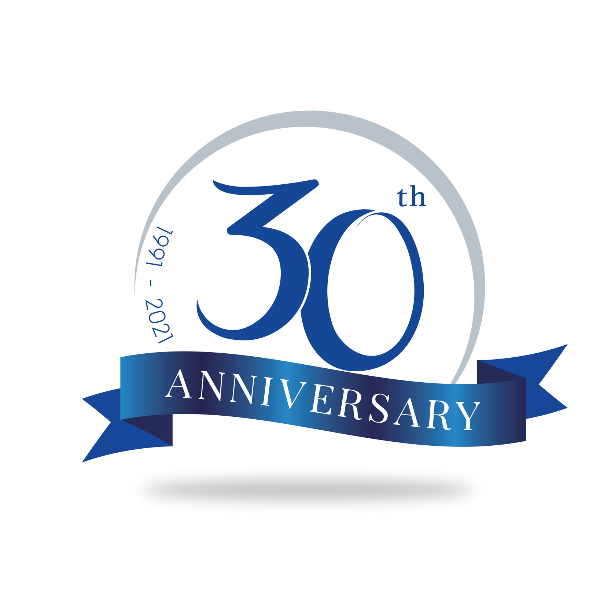

The team at Parente Borean LLP is proud to be of service to the community where we live and raise our families. It is our mission to invest our time and resources into giving back to our neighbours through dedicated and passionate service.
For more than 20 years, clients have trusted us to tend to their affairs promptly and professionally, and we are honoured to represent them on any occasion. As a well-respected firm, we hope our practice will continue to flourish with the community we service.
Choosing Parente Borean LLP means choosing a firm that truly cares.
Top 20 law firms in the GTA 2014 & 2015 (Novae Res Urbis)
Parente, Borean LLP was founded in 1991 by Don Parente and Gerard Borean, and has grown into one of the most prominent full-service law firms north of Toronto. Settled in the heart of Vaughan, we pride ourselves on making complex legal services more approachable for businesses, families and individuals.
For more than two decades, clients have turned to Parente, Borean LLP with a broad range of business and commercial matters including family law, proceedings the Ontario Municipal Board, civil litigation, real estate law and wills and estates.
The team of legal professionals at Parente, Borean LLP prides itself on its intimate atmosphere and close relationships with its clients even as it continues to grow. Combined with the rich expertise and experience of its leaders, the firm continues to innovate within the legal profession with integrity, passion and relentless determination.